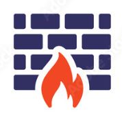

Conceitos Básicos em Cibersegurança
O que é Cibersegurança?
A cibersegurança é uma área de atuação importante dentro da segurança da informação e representa apenas os ativos digitais como a proteção de rede, hardware, software, infraestrutura tecnológica e serviços tendo sua atuação direcionada aos dados e protegendo-os contra roubo ou danos, como servidores, dispositivos móveis, redes e aplicativos assim como sistemas da informação.

Quais as diferenças com relação à segurança da informação?
A segurança da informação é relacionada com proteção de um conjunto de informações,visando à proteção dos ativos da empresa como um todo.
Dentre as atividades de segurança que estão contidas dentro desse termo, podemos citar:
• Gestão de pessoas: controle de acesso e distribuição de informação;
• Políticas de segurança: criação de regras claras acerca do uso dos dados;
• Segurança física: criação de barreiras que impeçam pessoas sem autorização de ter acesso a dados.
Para trabalhar na área de Cibersegurança primeiramente é necessário conhecer os três pilares da Segurança da Informação:
A Confidencialidade...
 A Confidencialidade tem a ver com a privacidade dos dados da organização e pode ser conceituada como a imposição de limites de acesso apenas às pessoas que têm autorização ou direito sobre a informação, tendo níveis de acesso estabelecidos
aos colaboradores da organização, como visualização, editação e exclusão de dados.
A Confidencialidade tem a ver com a privacidade dos dados da organização e pode ser conceituada como a imposição de limites de acesso apenas às pessoas que têm autorização ou direito sobre a informação, tendo níveis de acesso estabelecidos
aos colaboradores da organização, como visualização, editação e exclusão de dados.
A Integridade...
A Integridade é a garantia de que as informações manterão suas características originais com consistência e confiabilidade das informações
e dos sistemas da empresa ao longo dos processos ou de seu ciclo de vida.
Caso precisem ser manipuladas apenas o proprietário dos dados pode fazer a alteração,
caso haja interferência externa os dados podem estar corrompidos, comprometidos ou danificados.
A Disponibilidade... A Disponibilidade está relacionada ao tempo e à acessibilidade que se tem dos dados e sistemas da empresa, ou seja, se eles podem ser consultados a qualquer momento pelos colaboradores garantindo que o sistema permanece sem quedas ou interrupções.
Além dos pilares outros conceitos importantes para o setor de Cibersegurança são:
1. Firewall
A tecnologia de firewall é a primeira e principal proteção de uma empresa contra ataques cibernéticos, funcionando como um filtro que controla o fluxo de dados entre a rede externa e as máquinas da organização e decide permitir ou bloquear tráfegos de rede específicos de acordo com um conjunto definido de regras de segurança.
2. Ataques de negação de serviço

O ataque do tipo DoS (Denial Of Service), ou ataques de negação de serviço, utilizam sistemas especialistas que fazem milhares de requisições a um servidor ao mesmo tempo, derrubando o serviço e deixando-o offline por meio de uma sobrecarga.
3. Criptografia

A criptografia é uma técnica que tem como objetivo evitar o acesso indesejado de pessoas sem autorização à leitura de determinadas informações e manter a confidencialidade dos dados usando de determinados esquemas matemáticos e algoritmos para codificar a informação em textos inelegíveis.
4. Assinatura digital
A assinatura digital funciona como um método de criptografia, mas o seu objetivo é encriptar documentos e arquivos com uma identificação única que possa garantir a sua autenticidade perante os usuários.
5. Defesa em profundidade
Defesa em profundidade é ter muitas linhas de defesa para proteger de uma forma de ataque.
6. Políticas, Padrões, Procedimentos e Diretrizes
• Políticas: declarações gerais da administração sobre segurança
regras que devem ser seguidas
• Padrões: controles de segurança obrigatórios específicos
• Procedimentos: instruções passo a passo para implementação
os padrões e políticas
• Diretrizes: ações recomendadas a seguir